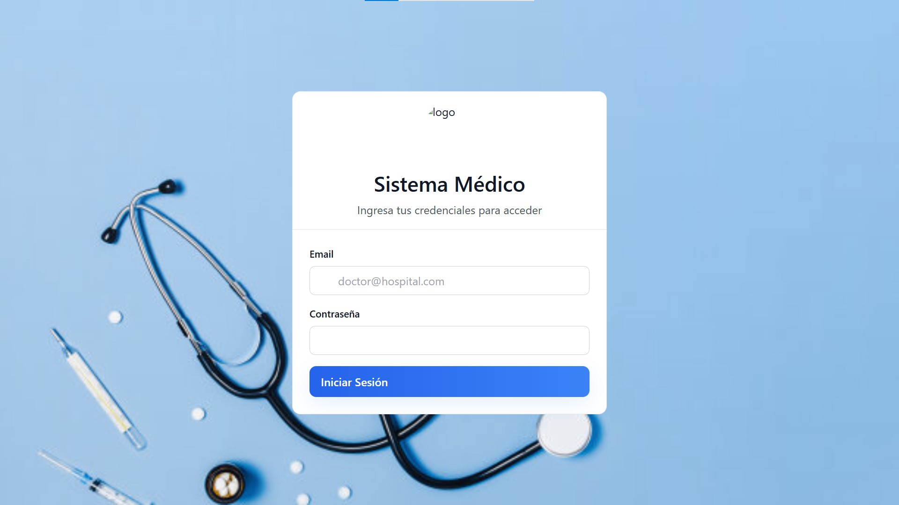
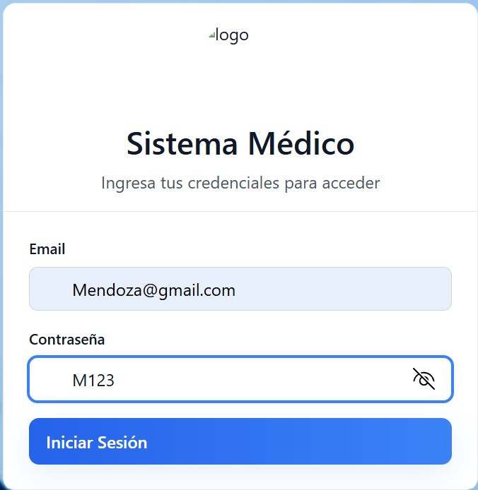
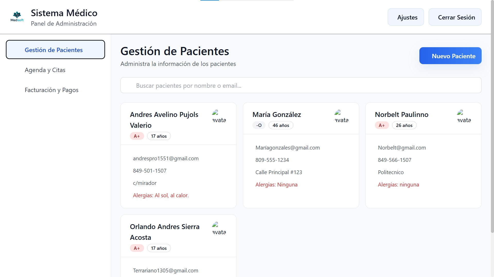
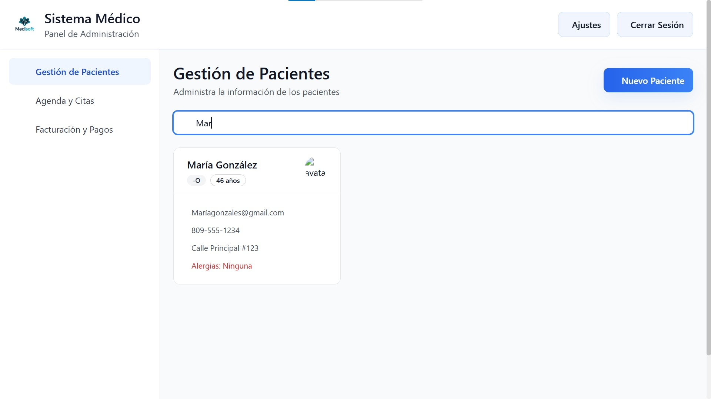
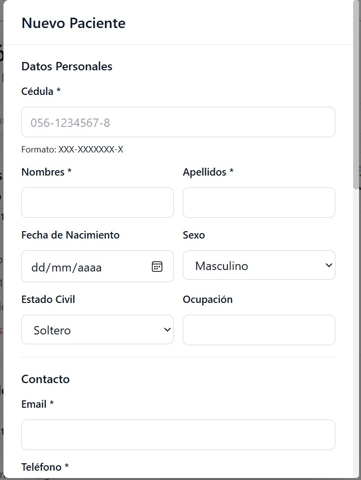
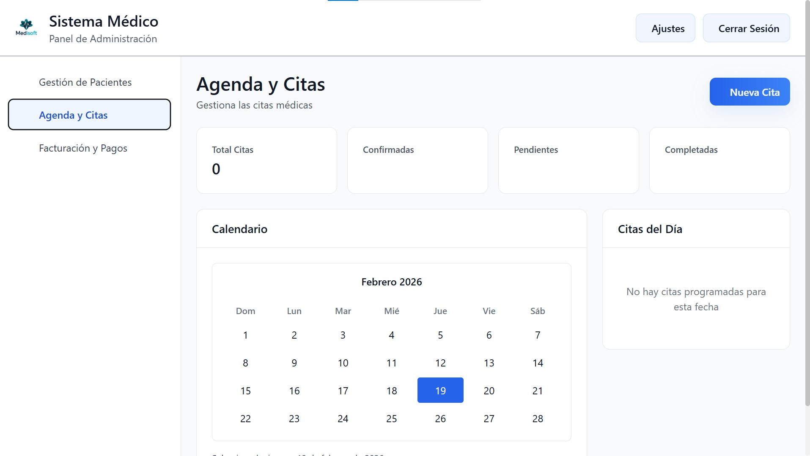
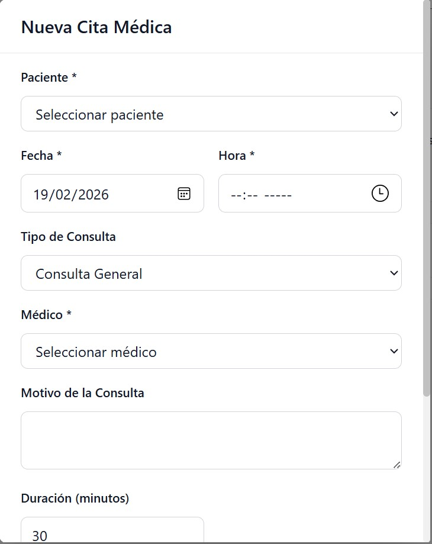

Bienvenido al manual de usuarios del sistema Medisoft. Este documento está diseñado para ayudar a los usuarios a comprender y utilizar
eficazmente las funciones y características del sistema. A continuación, encontrará una guía paso a paso para navegar por el sistema,
realizar tareas comunes y resolver problemas frecuentes.






